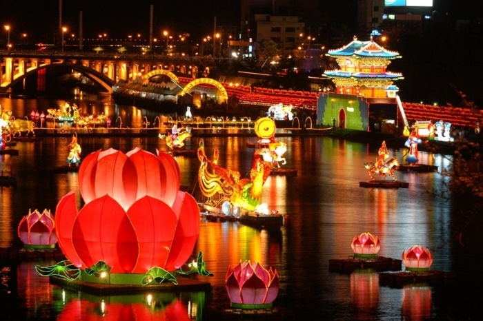
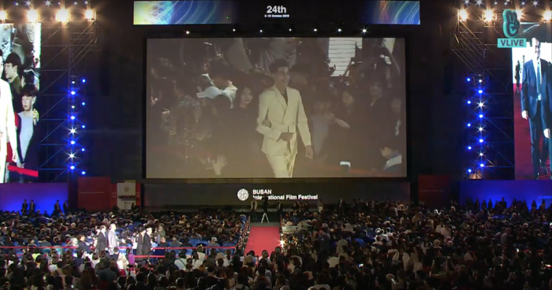
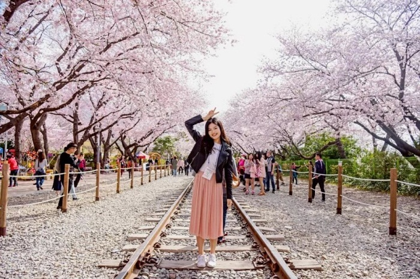
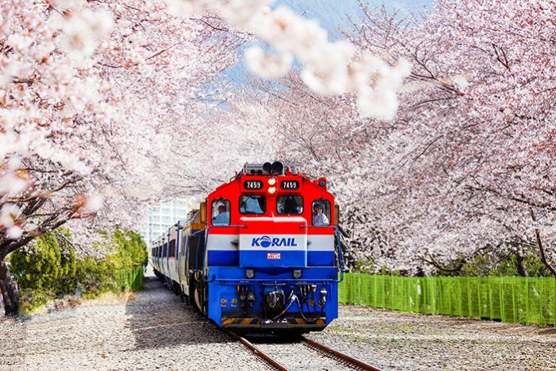
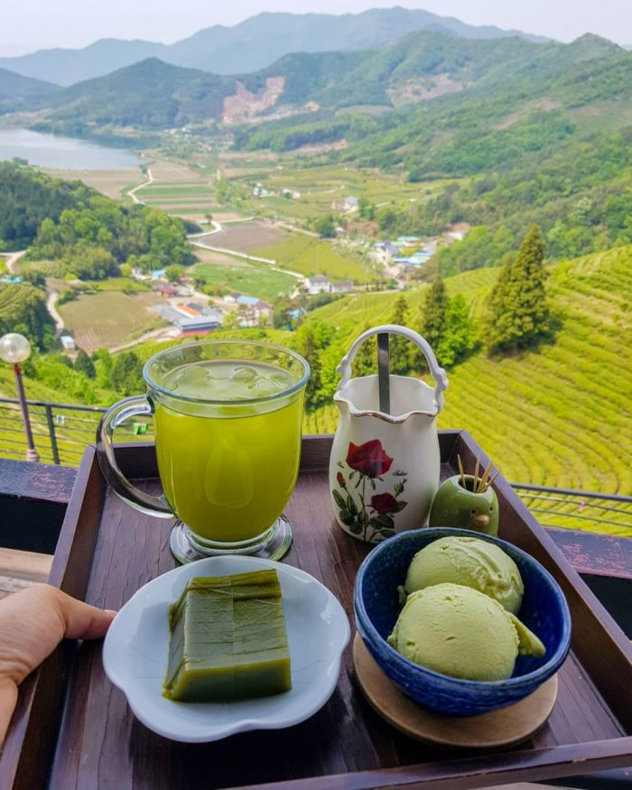
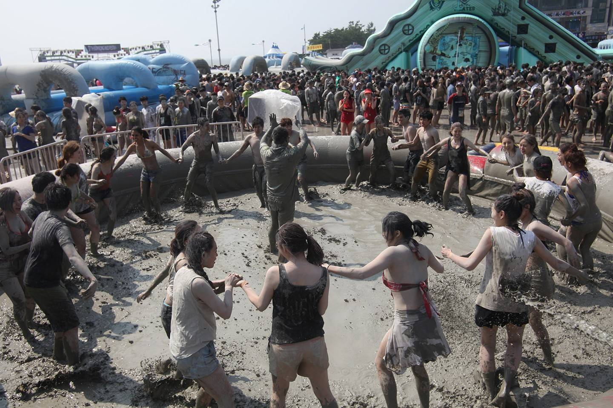

Du lịch Hàn Quốc
Welcome to Korea
Welcome to Korea
Hàng năm, Hàn Quốc tổ chức hàng trăm lễ hội lớn, nhỏ, xuyên suốt qua từng mùa. Tất cả các lễ hội ở Hàn Quốc đều để lại những dấu ấn quan trọng về văn hóa và lịch sử truyền thống trong lòng bao du khách thập phương. Bài viết dưới đây xin chia sẻ tới bạn một số lễ hội phổ biến nhất tại xứ sở kim chi. Bạn đừng bỏ lỡ trong chuyến du lịch Hàn Quốc của mình nhé!
Một trong những lễ hội ở Hàn Quốc nhất định phải tham gia là Lễ hội đèn lồng Jinju, được tổ chức với quy mô lớn tại thành phố phía Nam Jinju, diễn ra trong vòng 2 tuần đầu vào tháng 10 hàng năm. Đây là một sự kiện tiêu biểu, đại diện cho bản sắc văn hóa dân tộc của người dân xứ kim chi. Vào năm 1952, cuộc chiến tranh Imjin xảy ra giữa Nhật và Triều Tiên, quân đội Triều Tiên đã dùng kế sách cho một đội quân lớn; thả hàng chục ngàn chiếc đèn lồng xuống sông để ngăn chặn quân Nhật vượt Sông Namgang và tấn công pháo đài. Hơn 70000 người đã anh dũng hi sinh trong trận đấu. Vì vậy, lễ hội đèn lồng Jinju được hình thành và duy trì nhằm tưởng nhớ, tôn vinh những người chiến sĩ anh hùng.
Sự kiện tái hiện toàn bộ cuộc chiến ngày xưa, thể hiện lòng biết ơn của thế hệ trẻ Hàn Quốc. Người dân thả những chiếc đền lồng giấy mô tả các biểu tượng văn hóa Hàn Quốc như hình cờ, động vật, địa danh thế giới và các nhân vật hoạt hình nổi tiếng. Đến với lễ hội này, bạn sẽ được chiêm ngưỡng những chiếc đèn lồng lung linh sắc màu trong khung cảnh ban đêm tuyệt đẹp. Tại đây còn tổ chức hoạt động bắn pháo hoa, bày bán ẩm thực đường phố Quốc tế và các buổi biểu diễn văn nghệ truyền thống Hàn Quốc.
BIFF, hay Liên hoan phim quốc tế Busan là một lễ hội ở Hàn Quốc lớn, giới thiệu các bộ phim của đất nước và các nước khác ở châu Á, phương Tây, dành cho những người yêu thích phim. Sự kiện cũng diễn ra vào tháng 10, tại bãi biển Haeundae và thành phố Centum. Đó là hai địa điểm du lịch nổi tiếng thu hút hàng ngàn khách du lịch mỗi năm.Với khoảng thời gian kéo dài mười ngày và nhiều bộ phim khác nhau được tổ chức, du khách thỏa sức tận hưởng những bộ phim hay, đặc sắc nhất bằng cách mua vé xem trực tiếp.
Bạn cũng hãy tham gia các sự kiện hấp dẫn được tổ chức trong lễ hội này, từ những buổi chiếu phim ngoài trời cho đến các buổi chiếu phim lồng tiếng, kinh điển, cũng như các buổi đàm thoại với các nhà làm phim nhé!
Trong suốt tháng 4 và tháng 5 tại Hàn Quốc, người dân và khách du lịch thập phương lại náo nức tham gia lễ hội hoa anh đào tuyệt đẹp mang tên Jihae. Không giống như hầu hết các lễ hội ở Hàn Quốc khác, Lễ hội Hoa anh đào không diễn ra ở một địa điểm trung tâm. Thay vào đó, du khách có thể ghé thăm rất nhiều các địa điểm khác nhau. Chẳng hạn như ga tàu Gyeonghwa và cầu hoa anh đào Yeojwacheon, để chiêm ngưỡng một sắc hồng rực và cảm nhận vẻ đẹp của mùa xuân Hàn Quốc.
Bạn cũng có thể thưởng thức một số món ăn đường phố hấp dẫn như hotteok (bánh kếp ngọt),tteokbokki, … Cùng với đó là vô vàn điều thú vị khác khi dạo quanh quanh qua những cung đường phủ đầy hoa anh đào nhỏ xinh, quyến rũ.
Nép mình ở tỉnh Jeollanamdo – phía Tây Nam của Hàn Quốc, thị trấn nhỏ bé Boseong là nơi sản xuất trà xanh lớn nhất đất nước. Vào tháng 5, tại Boseong tổ chức lễ hội trà xanh để quảng bá tới toàn thế giới về ẩm thực trà – nét đẹp của văn hóa truyền thống Hàn Quốc. Nét đẹp văn hóa ấy được ươm trồng, thu hái, chế biến và gói gọn trong ấm nước thơm ngon. Bên cạnh đó, sự kiện cũng là dịp để người dân xứ trà Boseong thể hiện với bạn bè quốc tế về lòng hiếu khách, giá trị tinh túy của mảnh đất quê hương.
Bạn có thể đi dạo quanh qua các đồi trà, nếm thử kem trà xanh và một số đồ ăn nhẹ, đồng thời tìm hiểu về quy trình hái lá và chế biến trà xanh. Lễ hội trà Boseong gợi bao lưu luyến cho du khách với những ấm nước thơm ngon, mảnh đất giàu bản sắc văn hóa truyền thống, lòng thân thiện, mến khách của người dân nơi đây.
Nhắc đến lễ hội ở Hàn Quốc vào mùa hè, không thể bỏ lỡ Lễ hội bùn Boryeong diễn ra tại bãi biển Daejeon vào tháng 7 hàng năm . Đây là một sự kiện tiêu biểu, độc đáo với người Hàn Quốc cũng như người nước ngoài. Khi đến tham gia vào lễ hội, bạn sẽ được hòa mình trong bầu không khí náo nhiệt cùng nhiều trò chơi vô cùng hấp dẫn như trượt bùn, đấu vật, trét bùn lên mặt và nhiều hoạt động nghệ thuật khác diễn ra bên bãi biển.
Điều thú vị của lễ hội là một khi bạn đến tham gia thì không còn cách nào khác ngoài việc trét lên mình đầy bùn, nếu không sẽ bị nhốt vào nhà tù và bị hắt bùn lên người. Du khách cũng có thể đăng ký dịch vụ mát xa mặt hoặc mua một số sản phẩm chăm sóc da từ bùn. Vào ban đêm, tại đây diễn ra buổi hòa nhạc với sự tham gia của nhiều ngôi sao K- pop nổi tiếng như PSY. Bạn hãy tới đây để trải nghiệm và khám phá một chuyến du lịch đáng nhớ nhé.
GỢI Ý TOUR DU LỊCH HÀN QUỐC |
|---|
>> Hà Nội – Hàn Quốc: Busan – Seoul 6 Ngày Bay Vietnam Airlines chỉ với 15.490.000 đồng
|
Bạn có muốn tham gia các lễ hội tại Hàn Quốc được tổ chức thường niên không? Bất cứ sự kiện nào cũng đem đến cho bạn nhiều ấn tượng khó phai trong ký ức. Hãy nhớ theo dõi tin tức du lịch Hàn Quốc từ chúng tôi để biết thêm nhiều thông tin thú vị khác. Quan trọng nhất là giúp cho chuyến hành trình sắp tới của bạn thật trọn vẹn!
Top 20 điểm tham quan nhất định phải ghé thăm trong hành trình chinh phục Seoul

Điện thoại: 0903357616
Email: thaontps24690@fpt.edu.vn